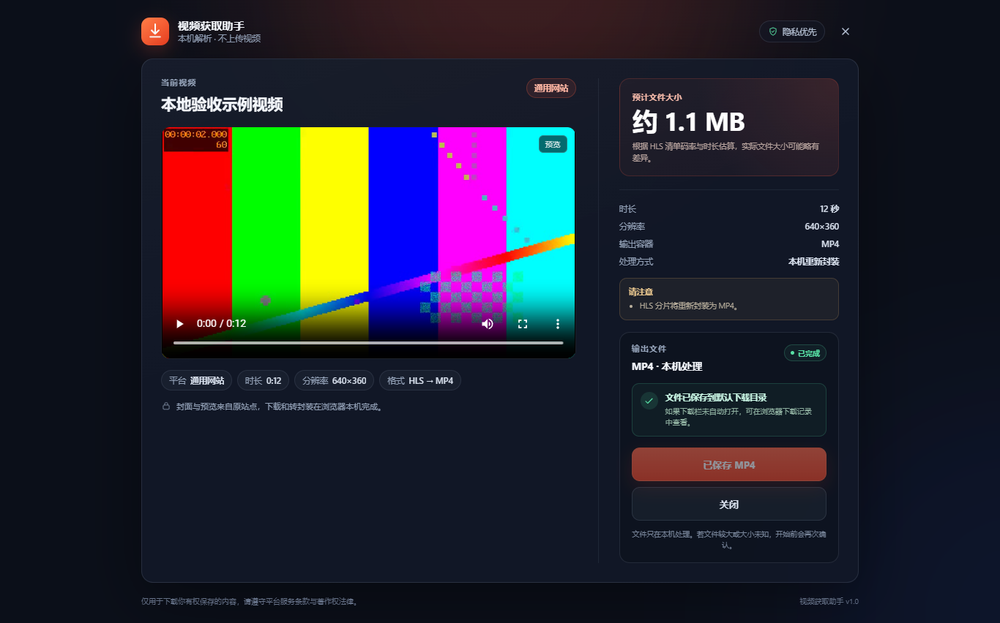

识别
自动选择当前主视频，过滤广告、隐藏元素和装饰性视频。
MANIFEST V3 · v1.0.0 · EDGE / CHROME
在视频页右下角点一下「获取视频」，先看大小、时长与清晰度，确认后在本机转封装为 MP4。没有云端，没有上传。

01 PRODUCT / 产品介绍
从识别主视频到本机封装，整个过程被拆成三个可以确认的步骤。
自动选择当前主视频，过滤广告、隐藏元素和装饰性视频。
新标签页展示标题、时长、分辨率、格式和文件大小，由用户确认。
直链 MP4 由浏览器下载，HLS / DASH / WebM 在本机重新封装为 MP4。
只有检测到有效视频时，按钮才会出现；页面没有视频时不会打扰原页面。
02 FEATURES / 核心功能
从入口、预览到本机封装，重点放在可靠和可解释上，而不是堆一排用不上的按钮。
只在检测到有效视频时出现，不打扰原页面；支持 SPA 路由和全屏容器。
独立预览页展示标题、时长、分辨率、格式和文件大小；大文件下载前二次确认。
HLS、DASH 音视频分轨、WebM 在本机重新封装；不把 .ts 或 .webm 改后缀冒充 MP4。
无云端、无账号、无追踪；临时分片在完成、取消或失败后清理。
默认适配抖音、快手、哔哩哔哩；其他 HTML5 视频网页可按需开启通用支持。
取消与重试、任务恢复、键盘操作、360px 窄屏适配、大文件提示。
03 SHOWCASE / 真实界面
以下截图来自扩展的实际运行环境：悬浮入口、选项页、窄屏预览与大文件确认。点击任意一张可以查看完整大图。
只在检测到有效视频时出现，右下角固定入口，随 SPA 路由重新识别。
选项页逐项解释权限用途，并用可选授权开启其他 HTML5 视频网页的通用支持。
标题、大小、参数和主操作在窄屏下纵向排布，不出现横向滚动。
超过 500 MB 或大小未知时，下载前再确认一次，避免误存。
04 PLATFORMS / 支持平台
默认适配抖音、快手、哔哩哔哩；其他含视频的网页需要主动开启通用支持。状态以当前版本的实际验证范围为准。
短视频 / 推荐流
短视频
普通视频页
任意含 <video> 的网页
| 平台 | 直链 MP4 | HLS | DASH / 音视频分轨 | 当前状态 |
|---|---|---|---|---|
| 抖音 | 支持 | 捕获后支持 | 捕获后支持 | 已适配 |
| 快手 | 支持 | 捕获后支持 | 捕获后支持 | 已适配 |
| 哔哩哔哩 | 支持 | 支持 | 视频 + 音频合并 | 公开页已验证 |
| 通用 HTML5 | 支持 | 支持 | 支持标准单 Period | 本地端到端已验证 |
左右滑动查看完整矩阵 →
实际可用性取决于视频是否公开、是否为 DRM、当前账号是否有权限，以及平台风控和防盗链策略。遇到登录、直播、付费、DRM 或解析失败时，扩展会明确提示原因，不会输出损坏文件或伪造成功。
大小提示：HLS / DASH 默认选择不超过 1080P 的最高可用轨道，以控制本机内存；超过 500 MB 或大小未知时，下载前会再次确认；需要本机重封装的路径受 ffmpeg.wasm 内存限制，硬上限约 1.2 GB。直链 MP4 由浏览器流式下载，不受这一限制。
05 INSTALL / 安装步骤
当前为开发版，通过 Edge 的「加载解压缩的扩展」安装。需要 Node.js ≥ 20.19，以及 Edge / Chrome ≥ 116。
Edge 官方发行版不支持通过命令行 --load-extension 加载，请在扩展页手动操作。
Chrome 用户可打开 chrome://extensions，执行完全相同的步骤。当前未上架应用商店，不提供商店安装链接。
在项目根目录依次执行，构建产物会生成在 dist 目录。
npm install
npm run build在地址栏输入扩展管理地址，并打开右上角的「开发人员模式」。
edge://extensions
点击「加载解压缩的扩展」，选择项目下的 dist 文件夹。
如果刚刚重新构建过，请在扩展卡片上点击刷新。
打开支持的视频页面并刷新，点击右下角「获取视频」，在预览页确认信息后点击「下载 MP4」。
首次在新网站使用通用支持时，可能需要按提示授权当前页面或站点。
06 FAQ / 常见问题
扩展不会上传视频、账号信息或浏览记录。遇到 DRM、直播、付费 / 登录限制时，会明确说明原因，而不是伪造成功。
更完整的能力与限制说明，请参阅项目根目录的 README。
不会。视频、媒体地址和处理过程都只在本机完成。扩展没有上传接口，也不接入统计埋点。
可能是 DRM、直播、登录 / 会员限制、地区限制、平台风控或防盗链。扩展会显示具体原因，不会输出损坏文件或伪造成功。
是。HLS、DASH、WebM 会在本机重新封装或转码为 MP4；失败时不会提供损坏文件。直链 MP4 由浏览器直接下载，不经过 ffmpeg。
官网和预览页做了响应式适配；扩展本身运行在桌面版 Edge / Chrome，需要浏览器支持扩展。
不需要。扩展不要求登录，也不会上传用户数据。
不提供批量抓取能力。请仅保存您拥有版权或已获授权的内容。
READY WHEN YOU ARE
先预览，再下载。无需账号，没有云端上传。